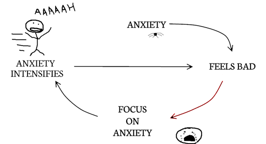

Positive Feedback
As noted on the previous page, positive feedback can have an amplifying effect on a system.
Example One: Cognitive System
Many overweight individuals experience positive feedback with respect to their mass. For example, an increase in negative thoughts about weight will increase or promote more negative thoughts about weight.
Summary: An increase in negative thoughts promotes a further increase in negative thoughts.

Example Two: Financial System
You may have heard that "it takes money to make money." To some extent, this is true! An increase in your wealth allows you to invest more and increase your wealth even further.
Summary: An increase in wealth promotes a further increase in wealth.